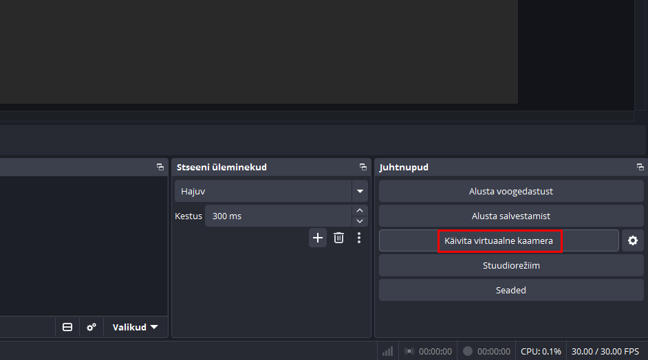
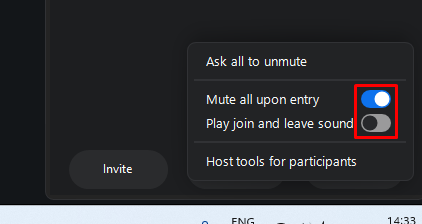
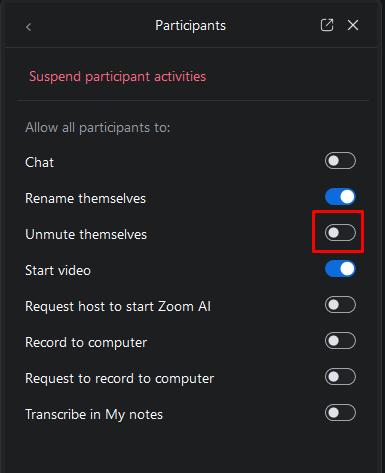
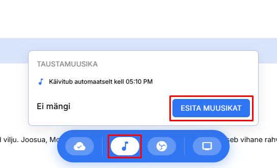
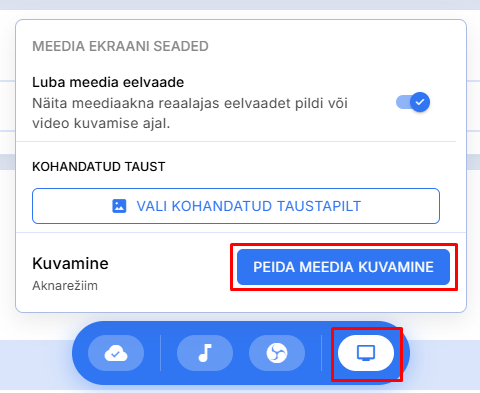
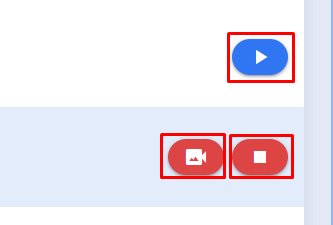
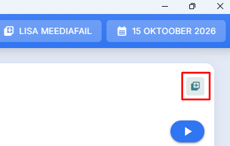
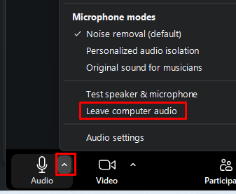
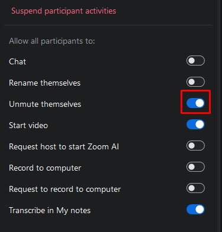

Jõhvi eesti AV juhend
Juhend vendadele, kes kasutavad Jõhvi saalis audio- videosüsteemi kasutades M3 programmi.
Enne koosolekut
Tee need toimingud enne, kui koosolek algab.
Esialgse seadistamine
-
Lülita arvuti sisse ja kontrolli et monitorid töötavad
Kui monitorid ei tööta, siis vaata seda linki probleemide lahendamiseks - Kontrolli, et M3 programm on avatud ja töötab (aastateksti on monitoridel näha)
-
Ava OBS programm ja vajuta nupule
Käivita virtuaalne kaamera

Virtuaalse kaamera käivitamine OBS programmis
Zoomi seadistamine
- Ava Zoomi programm ja käivita videokonverents
- Kontrolli, et video ja mikrofon oleksid sees
-
Seadista load osalejate jaoks. Järgi järgmisi samme:
- Vajuta nupule More Zoomi all paremas nurgas.
-
Seadista nagu pildil näidatud

Zoomi seadistamine osalejate jaoks
- Edasi vajuta nupule Host tools for participants
-
Seadista nagu pildil

Zoomi seadistamine osalejate jaoks
Muusika käivitamine
- M3 programmis vajuta muusikaikoonile
- Vajuta nupule Esita muusikat
- Seadiste helitugevust, et muusikat oleks kuulda, kuid et ta ei segaks suhtlemist.

Muusika käivitamine M3 programmis
Zoomi osalejate näitamine
- M3 programmis vajuta ekraani ikoonile.
-
Vajuta nupule Peida meedia kuvamine

Meedia peitmine
- Kontrolli, et teine Zoomi aken on täielikult nähtav. Võid vajutada selle peale kiiresti kaks korda, et see suureks läheks.
-
Pane aastatekst tagasi kasutades varasemat
Peida meedia kuvamine nuppu.
Kui tahad näidata Zoomi osalejaid, vajuta Peida meedia kuvamine nuppu koosoleku ajal. Näha on korraga ühte inimest. Ära unusta panna aastatekst tagasi peale osa lõppu!
Koosoleku ajal
Toimingud, mida teed koosoleku käigus.
Piltide ja videote näitamine
- Piltide või videote näitamiseks vajuta mängimise ▶ nupule M3 programmis selle pildi või video juures, mida soovid näidata.
- Kui soovid jätta pildi ekraanidele, kuid peita seda Zoomis, vajuta kaamera ikoonile sealsamas.
-
Kui soovid lõpetada näitamise, vajuta valge ruudu ⬜ nupule.
Videote puhul pole väljalülitamist isegi vaja, M3 lõpetab automaatselt video näitamise, kui see on lõppenud.

Piltide ja videote näitamine M3 programmis
Piltide ja videote lisamine
Mõnikord pole M3 prorogrammis kohe videot või pilti, mida tahad näidata. M3 programm lubab lisada palju erinevat tüüpi meediat.
- Mõtle mis koosoleku osa vajab pilti või videot.
-
Vajuta pluss ikoonile selle osa paremas ülemises nurgas.

Meedia lisamis nupp M3 programmis
- Vali mis tüüpi meediat soovid lisada.
- Allpool on kaks videot mis näitavad kuidas lisada pilte ja videoid.
Kõnepidaja pildi lisamine
6. erisaate lisamine veebisaidilt
Pärast koosolekut
Pane muusika käima ja luba osalejatel röökida ilma saalisolijate segamiseta.
Zoomi seadistamine
- Vajuta mikrofoni ikooni juures oleva ülesnoole peale.
-
Vajuta nupule Leave computer audio

Audio väljalülitamine Zoomis
-
Luba osalejatel rääkida kasutades nuppu
Allow to unmute mida kasutasid varem
siin

Luba osalejatel rääkida Zoomis
Kui midagi ei tööta
See osa on veel tegemises :)
+372 5905 1198